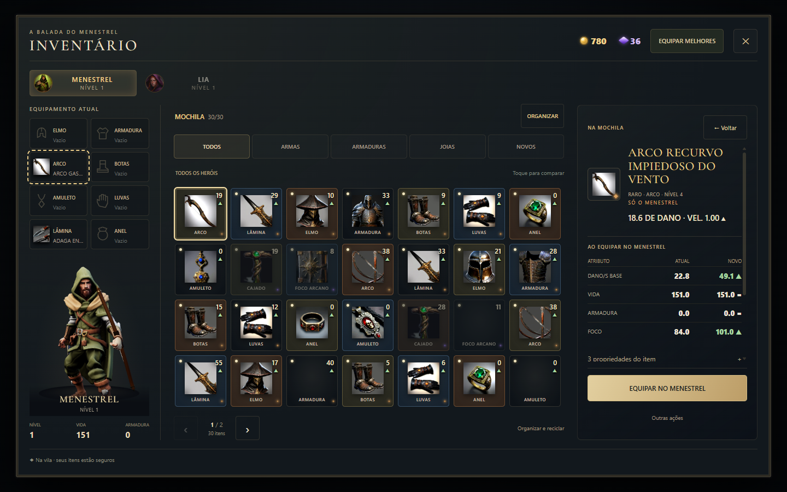
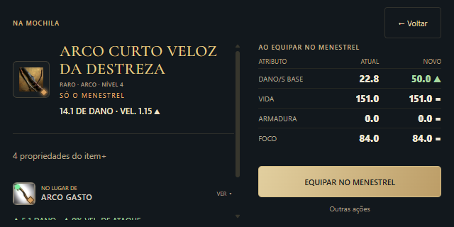
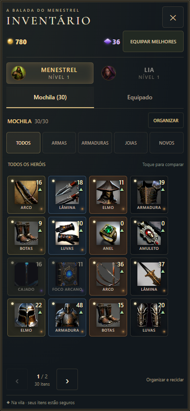

O inventário foi redesenhado com uma grade visual de itens, proporções uniformes e uma comparação que mostra o que muda antes de equipar. Referências de organização de Zelda e da tela de personagem de Destiny foram adaptadas ao universo do Menestrel.
Encontre, compare e equipe
Armas, armaduras, joias e itens novos têm categorias próprias. Ícone, tipo, raridade e valor principal aparecem na grade. As páginas se adaptam ao tamanho da tela, mantendo os itens acessíveis sem rolar a mochila.

Desktop: equipamento atual, personagem, mochila e comparação em áreas organizadas.
Uma decisão por vez
Ao selecionar um item, confira os valores Atual e Novo de dano por segundo, vida, armadura e foco. O botão principal equipa o item. Propriedades adicionais e outras ações ficam em áreas expansíveis, e o aviso de melhoria continua aparecendo após a troca.

Celular pequeno deitado: item e comparação em duas colunas, com Equipar acessível.
A mochila também cabe em pé
As abas Mochila e Equipado dividem a área disponível no celular. Tocar em um item abre seus detalhes; Voltar retorna à seleção. O filtro por herói é opcional: itens da Lia e do Menestrel aparecem juntos inicialmente.

Ícones de tamanho uniforme e paginação com mochila cheia.
Seu progresso permanece
Equipamentos, baú e saves preservados.
Reciclar itens raros ou lendários continua exigindo confirmação.
Mercador e ferreiro usam a nova interface.
O Caminho do Eco e o retorno ao andar alcançado continuam disponíveis.
Capturas da interface real na bancada de testes. Oito resoluções, mochila cheia, toque simulado e rotação no Chrome; avaliação em aparelho físico ainda necessária. Referências: inventário de Zelda e guia de Destiny. Modelos e ícones do próprio projeto.